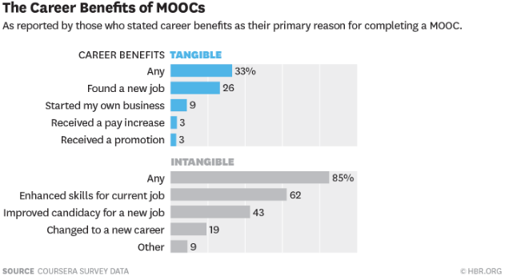
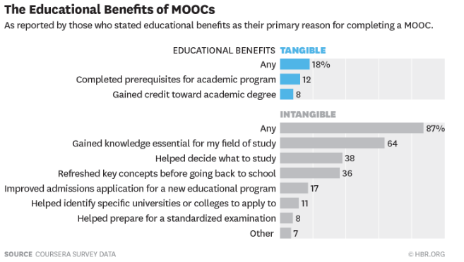

En esta era de tecnología uno no puede ignorar cómo crecen las personas son más ambiciosas al momento de querer prepararse para conseguir un mejor futuro y actualmente las personas siempre buscan actualizar su conocimiento en cualquier ámbito que le apetezca pero como en el pasado esto se conseguía de una forma anticuada, pero ahora ¿cómo se puede hacer?
Ahora se puede obtener información útil, verídica y de una fuente confiable virtualmente, cosa que actualmente en internet hay muchas cosas que están ahí pero no son de fuente confiable y se pueden llegar a tomar como verídicas.
Una respuesta que actualmente que puede ser la definitiva para gente que quiere aprender son los MOOCs por sus siglas en inglés que significa “Massive open online courses” que mientras el tiempo pasó las universidades empezaron a abrir su contenido que tenías que aprender presencialmente.
Esto lo empezó el MIT en el 2002 con la iniciativa de “MIT OpenCourseWare” y esto fué el inicio a que muchas instituciones empezarán a seguir los pasos del MIT pero el primer “MOOC” lo inició la universidad de Manitoba que se ofreció a 25 alumnos que pagaron la colegiatura y además a 2000 más que no estaban inscritos en la universidad pero todo empezó a despegar cuando edX que es una plataforma impulsada por el MIT, Harvard, Udacity y Coursera empezaron a salir a la luz.
Estas plataformas brindan un servicio de Cursos masivos online que permiten que cualquier persona con acceso a internet puedan inscribirse sin importar el grado de educación que tengan.
Estos cursos brindan actividades a realizar, tareas e incluso retroalimentación por parte de un maestro y todo se puede hacer desde la comodidad de la casa o de donde la persona quiera cumplir con los requerimientos.
Los cursos son gratis pero se puede pagar una cantidad establecida por el creador del curso para tener una certificación válida.
Impactos
El impacto que tienen estos cursos masivos en mi experiencia son algo bueno ya que brindan la facilidad de poder aprender lo que quieras aprender y sin necesidad de pagar nada y además poder experimentar como trabajan en otras escuelas sin necesidad e irte de intercambio y aprender de una buena forma en algunas universidades con prestigio.
El impacto de los “MOOCs” en la universidad es algo que se ha visto mucho y entre ellos está:
- Incremento en la conciencia alrededor del futuro digital:
- Más apreciación en la profesión de maestro.
- Diseño de los cursos basado en trabajo de equipo
- Creación de nuevos espacios de experimentación
Beneficios
 Los beneficios tangibles son los mas importantes ya que dan a entender como puede ayudarte en la vida.  Se pueden notar los beneficios educacionales en diferentes formas y los intangibles dan a entender lo que las personas quieren.Conclusión
In the world we’re living we take things for granted but there’s tons of free resources that we can learn from. We’re not putting our attention where we are supposed to do it, we spend a lot of time doing things that doesn’t give us anything useful but if we turn our attention to real education and most important free education we can start learning tons of stuff and that could give us a boost in our knowledge.